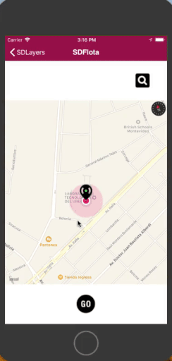

| False |
| True |
When Selection Layer is enabled, the map allows the user to navigate and select a location point using the map center. In addition, an event is executed when the point is selected.

This property applies only at design-time.
To apply changes made by this property, do a Build with this Only of the object.
This property is available since GeneXus 16 upgrade 3.
Objects: Panel for Smart Devices, Work With for Smart Devices
Platforms: Smart Devices(IOS)
Controls: Grid (Control Type: SD Maps)